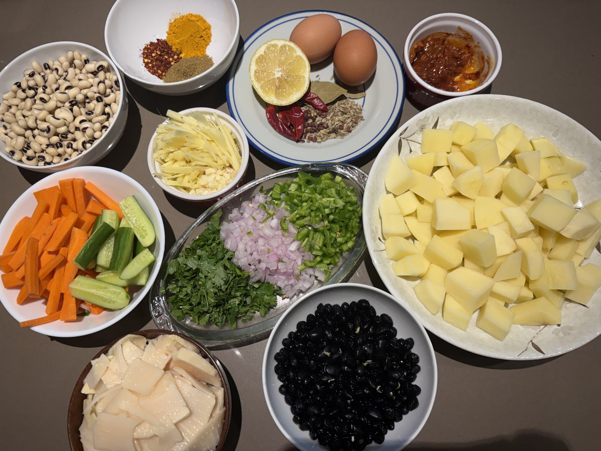
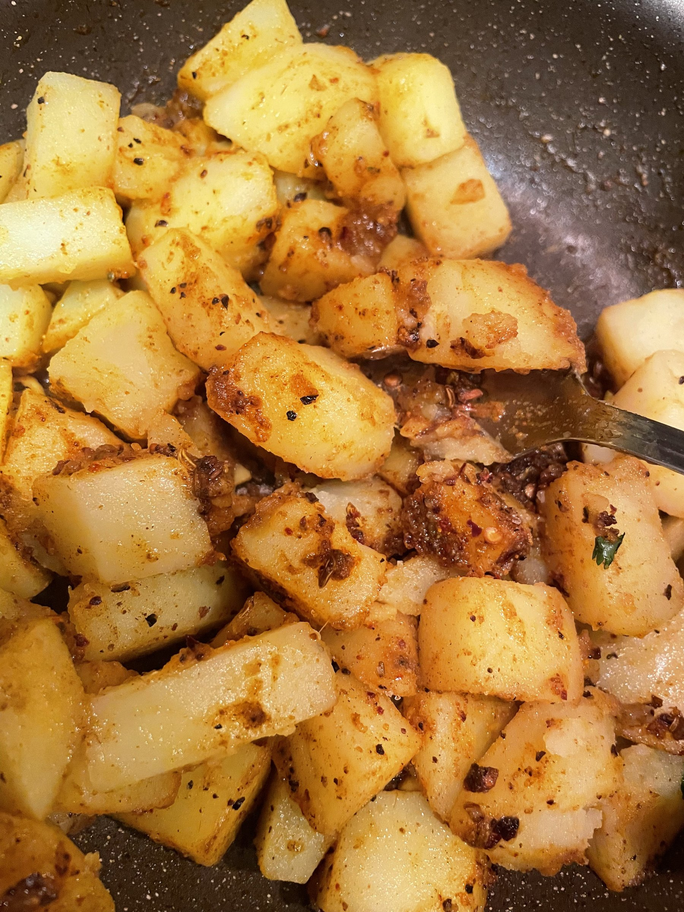
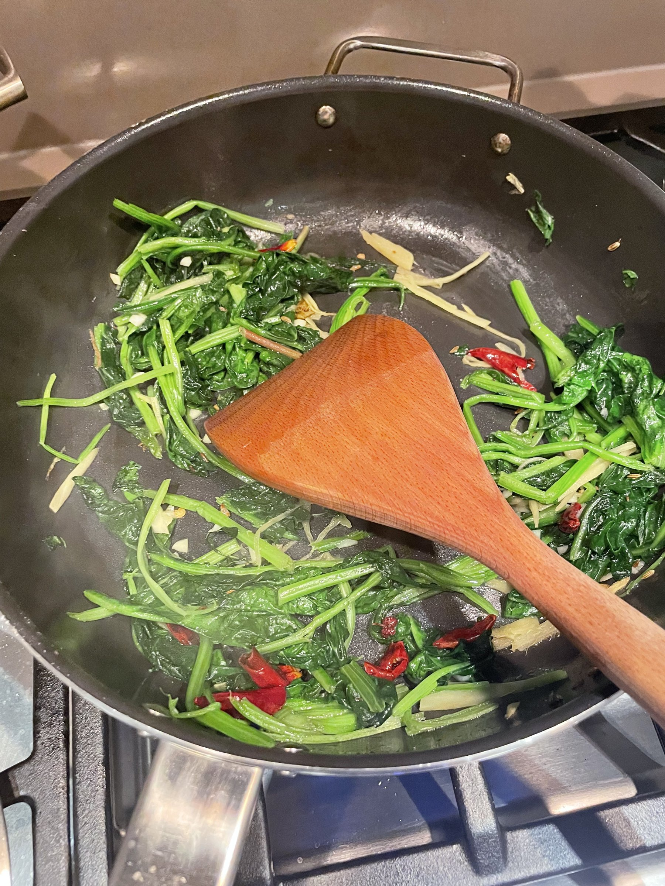
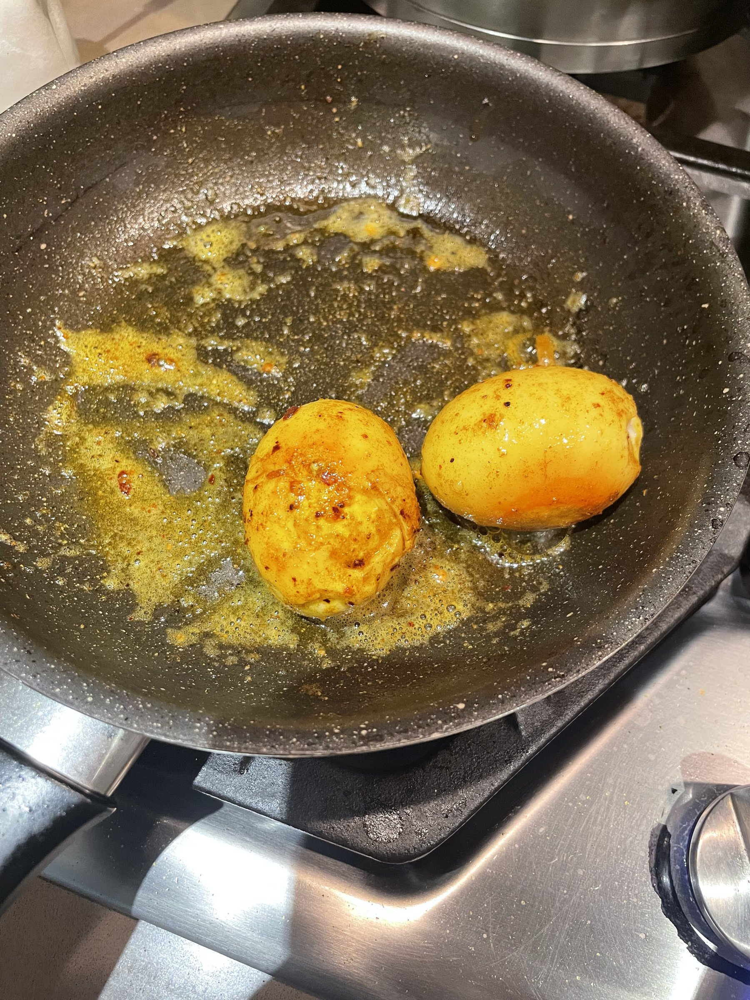
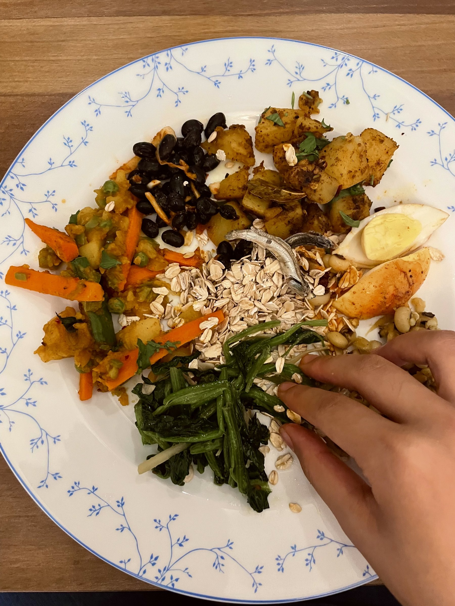

Samay Baji · Serves 4
The ceremonial Newari platter of small plates, shared by hand at Gai Jatra and almost every Newar celebration since
Serves 4 · Prep 30 min · Cook 1 hr
This is such a fun dish for celebrations, a little bit of every flavor, and it lets you customize and mix each bite. Some dishes have toasted, smoky notes, like the aalu and bodi, while others are sharper and bolder, like the saadeko bhatmas. The achar brings a tangy sweetness, and the chho and saag are rounder and more mellow. Together it's a full, playful spread of flavor rather than one single taste, more like a grazing plate than a plated meal.

Mise en place, forgot to snap the peas, spinach, tomato, and fish before they went in :(
Samay Baji shows up at Gai Jatra and pretty much every major Newar occasion since, and it isn't purely secular snacking. Traditionally the plate is offered to a deity or an honored guest first, and only afterward does everyone else eat, because in Newar hospitality a guest is treated as a stand-in for a god for the evening. It's also less a random assortment than a plate built like a sentence, with each item doing its own symbolic work rather than just filling space.
The dish's practical form traces back to how farming and laboring castes actually cooked and worked under an older, rigid Newar caste system. Because fuel and re-cooking were a luxury, families needed food that traveled well and didn't need reheating, which shaped the simple, room-temperature nature of everything on the platter. So Samay Baji started less as a "festival food" and more as durable, portable sustenance that later took on ceremonial weight.
Samay Baji is tied into the same broader Gai Jatra story of grief turned communal: it's the food shared once mourning families and their neighbors have processed loss together through the festival's procession and satire. Beyond festivals, it's also served at Newar life events from birth ceremonies to death anniversary rituals, meaning this one platter has quietly witnessed nearly every major occasion in a Newar life. That range gives it less the feel of a "festival special" and more of a constant companion dish across a person's whole life story.
Chiura, the toasted flattened rice, forms the base and symbolizes the land itself, the fertile ground the valley's whole food culture grows from. Choila, the spiced meat (traditionally buffalo), carries a heavier cultural weight tied to Bhairav's tantric tradition, a connection that doesn't map onto mainstream Hindu dietary norms and is worth naming rather than glossing over.

Aalu frying up, crisp at the edges
Nobody fully agrees on what the platter as a whole represents, and that disagreement is part of the charm. One reading says the core elements stand for the five natural elements: earth, water, fire, air, and sky. An older, less widely sourced Buddhist interpretation instead maps components like vegetables, ginger, lentil pancakes, black soybeans, and beaten rice onto five specific Buddhas. Regional Newar cities also plate and prepare it differently, so treating any single version as "the" authentic Samay Baji flattens a dish that's genuinely varied house to house and city to city. A full traditional platter would also include bara (lentil pancakes) and a pour of homemade liquor called aila, both left out of this version to keep things approachable.
Serves 4. Measurements are guidelines, eyeball and adjust as you go.
A Simple Dish Dictionary
Not included here, but part of a full traditional spread: wo/bara (black lentil pancakes), pau-kwaa / lapsi achar (hog plum pickle), chholia (spiced beef or buffalo), aila (grain liquor), and dhau/dahi (a yogurt-like dessert).
Prep & Aromatics
For the Achar & Aalu
For the Bodi, Saag & Bhatmas
For the Chho, Anda & Machha
Prep
Tip: since this dish has so many components, it helps to mise en place everything beforehand, get familiar with the seasonings, and do a mental run-through of the order of operations. Once everything is prepped, the actual cooking goes fast. I like to keep my seasonings, salt, oil, and a pot of water somewhere convenient while I'm frying, so I'm not scrambling around looking for them, since you'll reach for them a lot.
Boil the Base
The Small Dishes
Finish & Serve

Sauteing the saag with ginger and dried red chili

Rolling the boiled eggs through spiced oil for the anda
Since this dish has so many small components, get everything prepped and measured before you turn on the stove. Once the mise en place is done, the actual cooking moves fast, most dishes only take five to ten minutes once the pan is hot.
Since this is a mixed platter, the various dishes are best stored separately. The churia especially should be kept apart from everything else, since it goes soggy quickly from moisture. Generally, keep each dish in its own airtight container for about 2 days at most, then reheat.
Good to know: some dishes might actually taste deeper the next day, as flavor compounds mix and starches change, letting the sharper notes of onion, salt, garlic, herbs, and acid round out over time.

Plated: churia, achar, aalu, bodi, saag, bhatmas, anda, and machha, eaten by hand
My recipe is in no way authentic. It's what I put together after digging through research, ethnographic notes, and translated recipes online, aiming for something approachable and tasty so more people can explore Newar culture and Gai Jatra from their own kitchens.